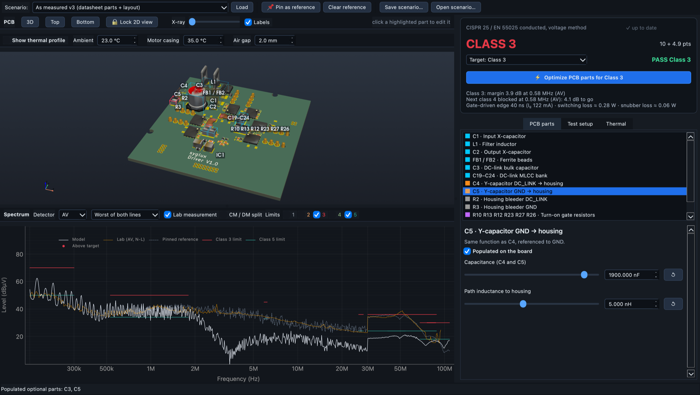
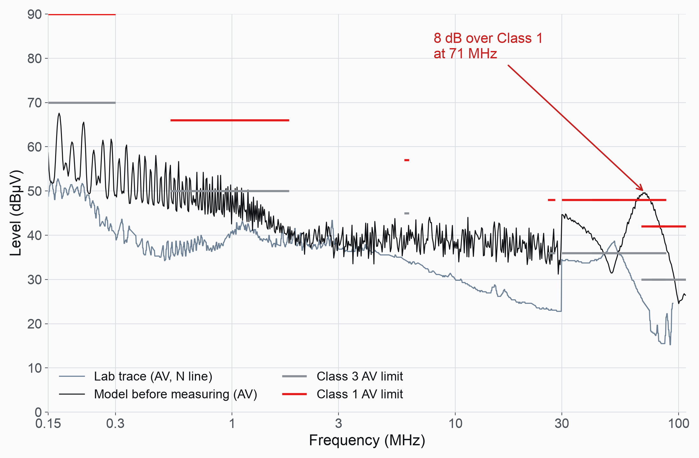
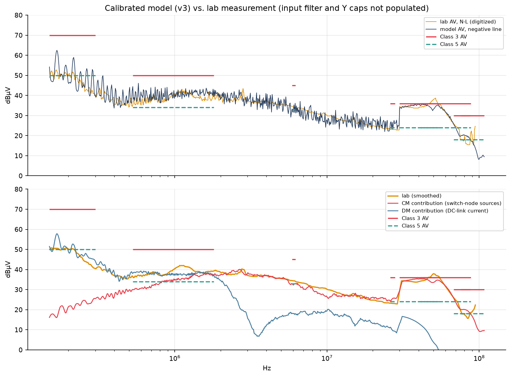
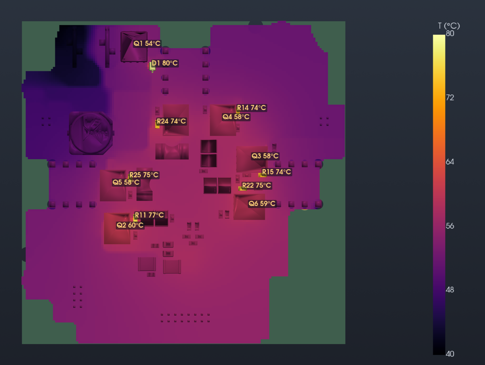

- Physics
- SourcesSVPWM switching-edge spectra
- CircuitNodal solution with LISNs, harness and filter
- ParasiticsExtracted from the PCB copper
- ReceiverCISPR 25 test-receiver model
- Role of ML
- The explorer runs the physics engine directly. Exact numerical shortcuts bring a full spectrum down to about 0.1 s, fast enough for interactive use, so every result shown is a complete solve.
Background
A three-phase motor-inverter board was measured for conducted emissions to EN 55025 / CISPR 25 (voltage method), with one average-detector scan taken before the input filter was fitted. The practical question was which PCB changes buy which emission class, and what each costs in switching loss and temperature, without building a board for every idea.
Approach
The model is built from physics, from the noise source through to the test receiver:
- Noise source: centre-aligned SVPWM at 12 kHz. Each switch-node edge is hard or soft depending on current sign and dead time, giving exact line spectra up to 110 MHz.
- Circuit: two CISPR 25 LISNs, the harness over the ground plane, input filter, DC link, motor winding capacitance to the housing and housing to ground plane, solved nodally at every frequency.
- Datasheet parts and layout parasitics: datasheet impedance curves for the choke, inductor and beads, plus stray capacitance and loop coupling extracted from the KiCad copper.
- Receiver: CISPR RBW of 9 / 120 kHz with average and peak detectors. This reproduces the ~11 dB step at 30 MHz seen in the lab trace.
A fast evaluator stays within 0.03 dB of the reference model and returns a full spectrum in about 0.1 s. That is what makes the explorer interactive: click a part on the 3D board, change its value or remove it, and the spectrum and emission class update immediately.

Physics first, then calibration
Before touching the lab data, the model was run on what the drawings and datasheets give: part values, MOSFET switching data, PCB copper and textbook estimates for the test-setup parasitics. With no measurement at all, it already reproduced the shape of the spectrum, including the 12 kHz switching comb, the common-mode plateau and the receiver step at 30 MHz, at about 11 dB RMS.

The remaining gap pointed at something real. Geometry gives about 8 pF from board to motor housing, but the measurement needs about 0.5 nF: a coupling path that isn't on this board, most likely a capacitor on the logic board's chassis connection. Calibration then fitted only the setup parasitics no drawing provides (housing couplings, supply entry, effective edge time, off-board DC link), bringing the model to 2.0 dB RMS.
Two fitted values matched measurements that were not used in the fit: a housing-to-plane capacitance of 21 pF against 20 pF measured, and a 31 ns hard edge inside the 25–40 ns seen on the scope. A Bayesian calibration then gives a spread for every parameter, so each design gets a class probability rather than a single verdict. For the tested board it gives Class 2 at 65% on the average detector, which is what the lab scan shows.

Design exploration
A built-in optimiser finds the smallest set of PCB changes that reaches a target class with 0.5 dB margin, trying value changes first and only then adding parts. It typically takes 15–20 s. Applied to the board design:
- Populating the housing capacitor already in the design gives Class 3 with 3.9 dB margin and no extra loss (87% probability).
- The full design, with C–L input filter and housing capacitor, most likely reaches Class 4 (64%, worst of average and peak).
- Adding a second housing capacitor reaches Class 5 on paper (86%). The deciding point is an unmeasured peak reading, so it is reported as plausible, not proven. About 8% of posterior samples show a housing-path resonance at 60–106 MHz that the single best fit hides.
Thermal cross-check
The same app carries a four-layer finite-volume thermal model of the board, built from the KiCad copper and vias. This brought out an important trade-off. The optimiser's cheapest route to Class 2 was to raise the snubber capacitors from 330 pF to 3.3 nF, but the thermal model puts the snubber resistors at about 95 °C, twice their power rating. An EMI fix that looks free on the spectrum is rejected on temperature.

Results
- A calibrated conducted-emission model at 2.0 dB RMS against the lab scan, with two independent measurements confirming fitted values.
- An interactive explorer that turns "what if we change this part?" into a 0.1 s answer, with class probabilities instead of a single yes/no.
- EMI, switching loss and temperature traded off in one place, including an ngspice switching-transient view of each half-bridge edge.
- Stated limits: calibrated on one average scan without the input filter, so filter results are trends until measured; peak levels are predictions; commutation-loop ringing above ~50 MHz is not modelled.